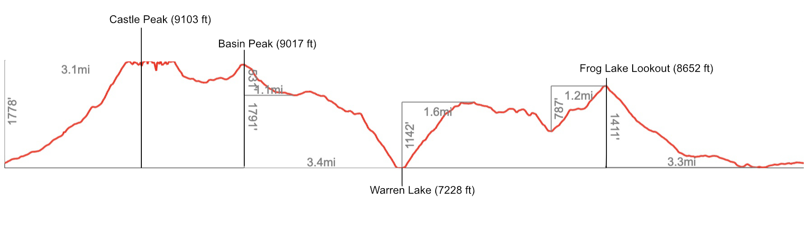

Castle Peak, Basin Peak, Warren Lake

I haven’t spent much time around Truckee, except to climb/pick blackberries at the Emeralds, or crag at Donner Summit, so I made a stop on way home from Washington and Oregon (escaping the fire smoke up north) to finally do a hike in fresh air. Kind of grim, knowing what’s to come.
I devised this loop out of Donner Summit/Castle Pass Trailhead that hits two peaks and a lake, which was about 17 miles, 5000 ft of gain, and took me 8.5 hours with plenty of swimming and sitting around enjoying the view :D Castle Peak itself took me 1.3 hours to summit.
A bit of everything: scrambly peak, fun ridge, alpine lake, big vert, wide views. gpx.

>Trip report
The dirt road to the trailhead was a bit spooky for me, even though I had the 4x4 high clearance van, so I parked in a pullout 1.1 miles before the actual trailhead.

I had a bit of dirt road walking before arriving at Castle Pass.

At the pass, the vert begins, with a solid use trail the entire way. It’s steep and sandy, but not so bad and overall pretty frontcountry. As a testament to that, I saw a parent going up carrying a toddler in a backpack.
After gaining the summit ridge, there’s some fun slabs and use trail traversing past the little castles to the biggest castle, on the eastmost side of the ridge.


The scramble to the top was a cool ramp full of big blocky jugs sticking out. It took me about 1 hour 20 to reach the summit of Castle Peak from where I parked partway up the road!


I hung out on top for quite a while, honestly marveling at the novelty of blue skies. Heading down, I encountered another solo hiker who was also contemplating going to Basin Peak, but spooked by the exposure of the connecting ridge and the red flag winds. I was actually glad for the wind, since I started hiking in the middle of the day and it would have been otherwise extremely hot. Also, the ridge looked so pastoral and cute. I munched on dried mangos and headed towards Basin.

At Castle Peak looking at Basin Peak (not to be confused with the much more striking Basin Mountain near Bishop!). I believe that cloud in the distance is the Dixie Fire.

Descending from Basin Peak and towards my next objective of swimming in a lake, I spied something surprising in the distance.


Ok, scrapping the plan for Devils Oven Lake, I continued onward to check out Warren Lake

Warren Lake is REALLY nice. Secluded, with backcountry camp sites, and I heard there’s good fishing. Perhaps the lack of visitors is due to the steep 1000-foot drop over 1 mile to get down to the lake. The fun part is climbing back out after :P

After climbing out of Warren Lake, I was totally sweaty and sticky as I was when I had started. Now I looped back towards where I parked, taking Warren Lake Trail. Luckily it was late in the day, so I got some relief from the heat in the shadow of the Castle-Basin ridge.


Crossing over the last pass of the day, I took a small detour to Frog Lake lookout. Ominous smoke in the distance (I’m guessing from Dixie Fire).

The rest of the hike was pretty downhill! It was already dark by the time I passed the Donner Pass rest stop (kind of funny that the trail cuts so close to the highway).
Comments
I love your description of this glorious terrain! I hike here often, today included, though little too much snow to comfortably reach Warren yet. Happy hiking!